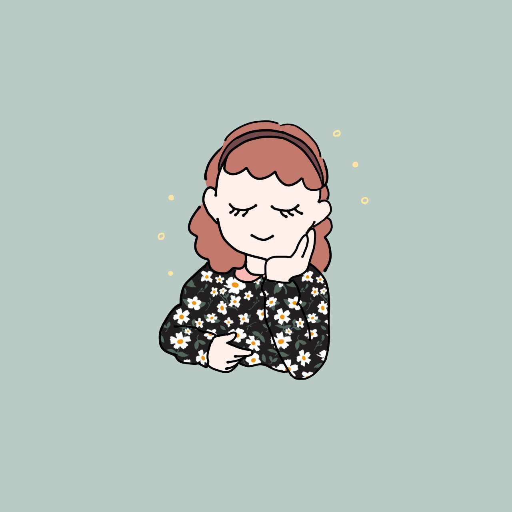

純喫茶の魅力
純喫茶に行ってみようと思っていただくために、私が考える純喫茶の魅力についてご紹介させていただきます。
魅力1 こだわりのコーヒーが楽しめる
現代では、コンビニエンスストアやスターバックスコーヒー等のチェーン店で、安易に安価で飲むことができます。 しかし、それらとは違い、純喫茶では一杯ずつマスター自らがサイフォンでコーヒーを煎れてくれるため、 カフェや自宅では味わえない、一味違うコーヒーを楽しむことができます。
魅力2 ゆったりとした落ち着く空間

まるでタイムスリップしたかのような昭和レトロな空間、静かな音楽、漂うコーヒーの香り・・・ リラックスできるお店が多いのが純喫茶の魅力の一つです。 心を落ち着かせたいとき、ゆったりとした時間を味わいたい時に、最適な場所だと思います。
魅力3 マスターとの距離感
マスターが気さくに話しかけてくださることが多いです。 純喫茶の歴史やこだわりであったり教えていただり、雑談を交わす中でほっと温かい気持ちになります。 マスターに会いに行くために通う常連さんも多い印象があります。
魅力4 同じお店がないこと
店内の空間やインテリア、コンセプトはマスターのこだわりが反映されています。 ワンと鳴くインコがいたり、沢山の猫がいたり、ライブステージがあったり・・・ そのため、どの純喫茶も唯一無二の空間が広がっているので、その都度楽しむことができます。
実際に純喫茶に足を運んでいただいて、上記で紹介した魅力を体感していただきたいです。 紹介しきれていない魅力も沢山あるので、そちらも是非自身で体感していただいて、他の人に伝えていって頂きたいです。